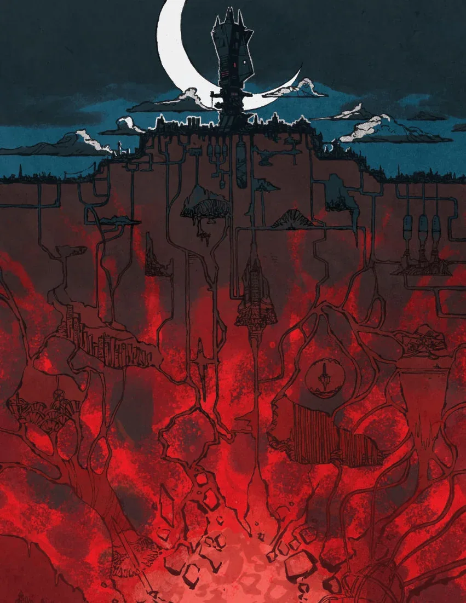

Über uns die Stadt, Spire, reckt sich in den Himmel. Unter uns die Stadt, Heart, reckt sich in die Erde. Hinab durch Dreck und Fels und Wasser, hinab in die Tiefen der Finsternis, hinab in Wahnsinn und Krankheit, hinab in etwas Uraltes und Fremdes.
Leute gehen an diesen Ort und suchen etwas. Geheimnisse der Magie, längst verloren oder nie entdeckt. Zauber, die einem im Blut jucken. Unbegreifliche Kreaturen, die man jagen und ausschlachten kann. Einen Ort, um sich zu verstecken oder neu anzufangen. Vergebung von einem Gott, der sie nicht darum betteln hören kann.
Und jetzt: du, der glaubt, alles durchschaut zu haben. Frag dich, wonach du suchst.
Das Herz kann dich riechen. Das Herz weiß, dass du kommst. Wenn du aus dieser Tür trittst, wenn du die Schlucht am Ende der Straße hinabkletterst, wenn du auf dem Bauch durch das sich windende Gedränge des Felsens kriechst, wenn du geschlagen und blutig herauskommst, wird es dich haben.
Das Herz weiß, was du willst, und bei der Göttin, es wird es dir geben oder dich beim Versuch umbringen.